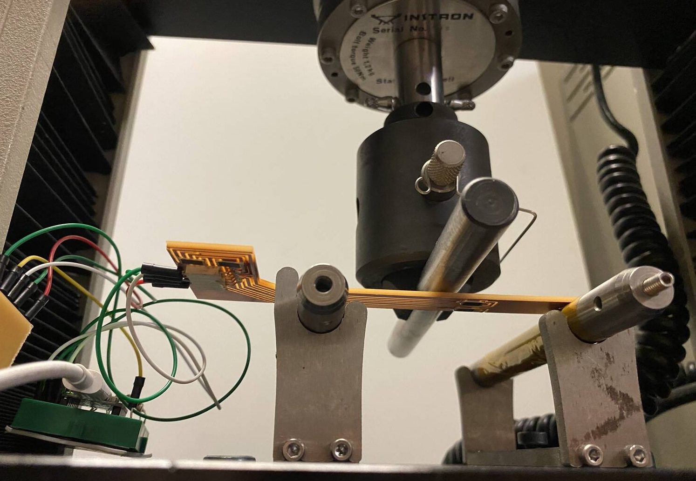
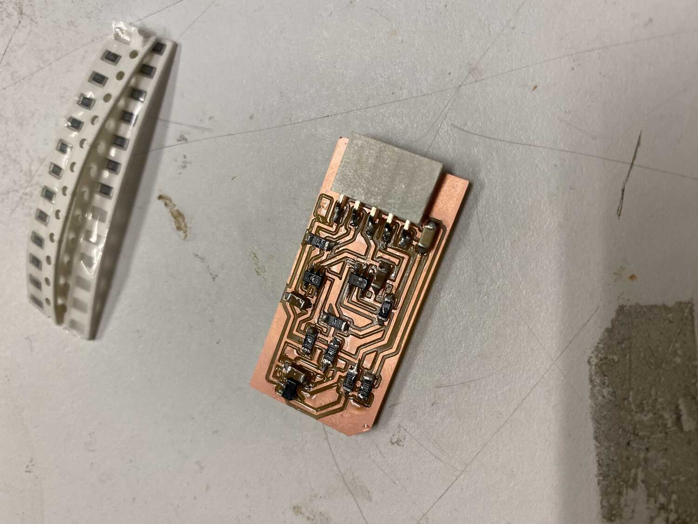
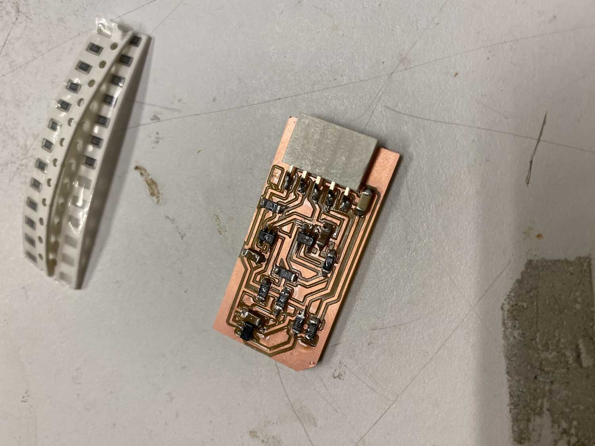

Project Closed Loop Shape Control
This is my UROP research project for IAP 2023. The goal is to explore sensing deformations in a plate-like structure to construct a digital twin. Additionally, we aim to have the structure be closely integrated with the sensing components and pcb and to eventually actuate and control the shape directly. The first step is to see if we can use resistors as cost-efficient strain sensors.
WEEK 1 Jan 8-12
As a first step, I will be learning strain sensing circuits and implementing them on a breadboard using a xiao samd21.
This first test is to use a strain gauge (25k ohms unstrained) as a resistor in a voltage divider configuration and to measure the change in voltage
at the output node.
And then in Tools>Board>Boards Manager find Seeed SAMD Boards and install. I made the mistake of removing the json file for the esp32 cores which take forever to download. Apparently you can just have multiple urls seperated by commas.
voltage divider strain sensing
Before I run anything, I need to have the circuit ready. Since my usbc cable is pulling the arduino from the header pins I'm going to solder them. Soldering these was very satisifying. Then to complete the voltage divider, I use a 10k resistor connected to ground while the strain gauge is connected to the 3.3V output of the xiao. According to the voltage divider formula the voltage should be Vin*R2/(R1+R2) = 3.3*10k/26k = 1.27V From initial tests it looks like the readings are fairly unreliable since they change when I touch parts of the board or the amount of pressure on the breadboard, but it doesn't actually measure a change when going from ground to 3.3V. The change to 5V is pretty noticeable and the strain gauge seemed to show some change in the reading when bending it, but I can't be sure that it isn't just from the pressure on the gauge or contact with my hand.
It looks like using "A7" for the D7 pin compiled but was not actually being used and the readings were just stray voltage. I confirmed this by switching to the A0 pin and reading ground and 3.3V values and it changed from ~0 to ~1023. I'm not sure why A7 doesn't work since it was referenced here, but I will just use A0 for now.
With a 10k resistor the analogRead values ranged from 100/1023 when bending backwards 180degrees to 250/1023 when left unstrained to 325/1023 when bent forward; a range of about 225With a 20k resistor the analogRead values are 185, 415, and, 490, a range of about 300. With a 30k resistor the analogRead values are 200, 510, and, 600, a range of about 400. With a 40k resistor the analogRead values are 240, 580, and, 670, a range of about 430. With a 50k resistor the analogRead values are 290, 630, and, 720, a range of about 430. Using a multimeter it looks like the gauge is actually 30k ohms when flat, 20k when bent forward and 100k when bent backwards.
Wheatstone Bridge strain sensing
After reading a bit, wheatstone bridges sense a relative voltage, making the circuit less susceptible to noise, and letting 0V be the balance point. The wheatstone bridge is really just the voltage divider with another voltage divider in parallel as a reference.I used 3 100ohm resisitors in series to get closer to the resistivity of the strain gauge. For some reason the pin next to A0 is A10 and not A1 like in the documentaion. also D3->A8 Using A0 and A8 for the wheatstone bridge, I end up with this configuration.

WEEK 2 Jan 16-19
Next, I'll move on to testing on a pcb board using some resistors instead of strain gauges.
To mill the board I'll be figuring out how to use V-bits. Just by using the v-bit calculator in https://modsproject.org/ instead of the 1/64 module things worked out fine. I also soldered everything and added a few connectors.
Now back to arduino code. Here is what I got when printing the variables A0-A9:
19:00:16.809 -> HELLO
19:00:16.809 -> 14
19:00:16.809 -> 15
19:00:16.809 -> 16
19:00:16.809 -> 17
19:00:16.809 -> 18
19:00:16.809 -> 19
19:00:16.809 -> 20
19:00:16.809 -> 21
19:00:16.809 -> 22
19:00:16.809 -> 23
After further testing, the A2 and A4 pins are the only ones without a mapping. Since I used a pin that doesn't have a name, I simply used a jumper to a different pin. With this setup, I tested to see if there was a noticeable difference in the analog read output. There was not. Based on Miana's feedback, I tested to see if the resistance changed using a multimeter when bending. There was a variation of about 1 ohm. As the next step, I made an amplifier circuit that would amplify the difference between the nodes of a wheatstone bridge.
issue: weird values
After making the board, I started probing it to test voltages at different points. While the nodes of the wheatstone bridge should have the same reading since they use the same resistor values, when connected to the differential amplifier the reading of one of the nodes is 2.1V instead of 2.6V. Since the amplification is of about 820x, 0.5V difference quickly gets amplified beyond the cap of 5V. Maybe I'll try a lower value than 800k to see if that changes anything. I tried 499k and it didn't change anything. One thing I noticed is that when measuring ohmic resistance of some of the 1k resistors, some of them had 664 ohm resistance instead of 1k. Looking at the skematic it looks like that resistor is in parallel with 2 1k resistors in series which give it an equivalent resistance of 666 ohms. Since this is due to the grounds being connected, I'm not sure if this contributed to the issue, but that doesn't really make sense to me. That's all for this week.WEEK 3 Jan 22-26
debugging with simulation
After trying to formulate my problem to ask for help I realized that I can try simulating it. In this simulation, its clear that the different values was not a mechanical or noise issue but just the circuit was wrong. by drawing it up like this it was clear that the ground connections changed the resistance in the wheatsone bridge and no longer made it balanced.
To fix this issue I thought of different solutions. Maybe it would be possible to add the same impedance to the other leg of the wheatstone bridge, or to read the output of the bridge and use a microcontroller to replicate the signal into the differential amplifier circuit. I good suggestion from GPT was to use a unity gain buffer. I never really understood what they were for but now that I'm in this situation it makes a lot of sense. I redesigned the circuit in eagle with 2 unity gain buffers at the outputs of the wheatstone bridge to isolate them.
adding capacitors, unity gain buffer, fixing resistor values, calculating CMRR
Upon further recommendation from gpt, I added capacitors before all the op amps to clean up the signal potentially, using 0.1 microF ceramic bypassing capacitors in parallel to filter out any ac noise that might occur, as well as a 10microF capacitor at the pcb power inputs for good measure. Since this was a very enlightening use of capacitors I took some time to read about typical usages and values and positioned them in my design accordingly. It looks like decoupling and bypassing have similar implementation but decoupling is a term used for smoothing out low frequency noise from dc while bypassing is used when filter high frequency noise from a dc signal.
 

After some inital tests its clear that there are still issues. After spending some time simulating in circuit lab, talking to gpt and reading datasheets, (and debugging my simulations) it looks like the main issues are that I didn't account for the CMRR, common mode rejection ratio, and that my forumla for the diff amp was wrong.
The CMRR is a ratio in decibells that follow this formula: 20log(gain_cm/gain_diff) with common values of 70-80 db. Higher value means better rejection Since this ratio scales with the gain factor of my setup, maybe I can minimize the common mode voltage gain by maximizing the gain of the diff amp circuit.
Reading the datasheet of the ad8605 it looks like the gain for dc cm voltage is 90db. using the formula I found that at 800 A_diff (A for gain), A_cm becomes 0.0253 and at 500, A_cm becomes 0.016. So the scaling is actually directly affected by the differential voltage gain, so maximizing the gain would actually increase the cm gain, my previous statement is wrong.
In my notes I only set 1 resistor to set the gain when I need to set 2 of them, there should be 2 pairs of resistor values. Now that I fixed this in the simulations it looks like things are working as expected. I just need to switch out some resistor values and my setup should work.
Final fix (hopefully), since I'm using 5V and ground for VCC, I need to swap the values of vin- and vin+ in the diff amp circuit since the voltage at the leg of the wheatstone brige decrease when the resistor is strained, thus it needs to go to the inverting input so that the total stays positive.
Ok I made a mistake and just swapped the inputs to the op amp, but that wouldn't work since the feedback would be going into the non inverting input which is illegal. So I swapped the inputs before the resistors by adding a couple jumpers and doing some surgery. It looks terrible, but it works!
next steps
Now that I can measure the signal of the deformation I have a few objectives to think about:
- Determining direction
- Scaling Efficiently
- Interpret Reading as Strain Measurement
- Creating a model with the data
determining directionality
I'll start by thinking about these seperately and seeing whats possible. For determining the direction, Alfonso showed me a useful circuit, the full bridge version of the wheatstone bridge where all the resistors are used as sensors. While I havent read into this, I'm not sure if this is possible with resistors that can't tell which direction they are being bent in, although it does look like that bending in one direction yields a higher change in resistance than bending in the other direction (at least when on a pcb).I need to verify if the resistors do actually act differently depending on orientation and what the actual range of value is. I broke the board at around 0.6V reading. Definitely not near the 4ohm difference from Miana's test. Ok after some tests using the ohmeter and bending resistors with pliers, it looks like the resistance increases when the bending is concave and increases when the bending is convex (~4ohms max for both, black side up). It is still interesting to verify the readings from bending resistors on the pcb since it might have different compression/tension strain due to the solder holding it in place. For the next boards I'll make a board that is simply the diff amplifier with the buffers and other boards to test different bridge configurations.
WEEK 4 Jan 29-Feb 2
This is the last week for this project. As the first step, I made the isolated diff amp circuit and a new sensing board that is a half wheatstone bridge configuration instead of the quarter version from before. The difference is that I am straining two resistors, from opposite sides of the wheatstone bridge diamond, which doubles the signal. One thing I didn't expect is how well the direction of bending is captured. I think I need to isolate the VCC- for the op amp to capture both bending directions.
instron testing
Once I isolated the negative VCC input to the differential amplifier, I realized I could just flip the inputs for now. For the next step, I made a board to be tested with a 3 point bending setup. To minimize the bending of the reference resistors, I used an L shaped board and put them on the shorter leg. Something weird happened with the milling process. While the depth of cut was correct in the G code and I thought I zeroed everything properly, it cut much deeper than usual and broke the bit. I suspect that since the gcode file has an origin that is a pretty far, I zeroed it at a much different height then the cutting region. I since learned that by right clicking in the simulation you can set the work offset so that where ever the endmill is corresponds to where you want it to be in the simulation (although the zeros might get messed up once the job is done if its too far from the bed).
For the instron testing, I plan to synchronize the instron measurements with the data from the xiao samd21 analog read. It looks like that with the longer test board, there is a lot more noise in the signal, so the votage difference actually starts at 1.2V and goes to 4.7 when strained. Since the ref voltage of the xiao I am using is 3.3V, I'll use 3.3V instead of 5V to power the circuit, which should scale everything down into the operating range.
We used a 3 point bending setup and place the pcb with the resistors on the bottom, directly centered with the middle bending rod. To collect data, I used this arduino script, and opened the serial monitor at the same time as I clicked start on the instron interface. I did a bit of processing in python and then copied the analogRead() data to matlab. Since the rate of data collection was the same for both, I simply plotted them against each other in matlab to compare the voltage and displacement or force (script). I scaled the data from arduino by 3.3/1024 to get the voltage, and flipped the force and displacement signs so that it moves in the positive direction. It looks very linear!
Conclusion
To wrap up the IAP term, I can work on making a model to make a flex pcb/scale up. The idea is to make a bunch of small flex boards that can be glued to a surface to measure the strain at that point. The flex boards would consist of 2 resistors and a flat flex connector from molex. I would also have regular boards for the microcontroller with connectors for the input data, gound, and power, as well as the amp board with the other 2 resistors of the wheatstone bridge.
The remaining that needs to be resolved is how to power all the microcontrollers, if it is possible to isolate the amp boards or to merge them with the remaining resistors of the wheatstone bridge.
-
Additional considerations:
- use a ground plane for the pcbs since they can be multilayered,
- pick a microcontroller with a higher or controllable vref for analogRead(),
- use the bare chip instead of the xiao packaging for access to additional pins (although the 1:1 ratio of amp boards to reading pins is a constraint anyway),
- The flex boards would have arrows to indicate directions normal to the resistors.
- Save the I2C pins for networking between the microcontrollers.
- multiplex the amp boards to reduce the number of components.
Since today is the last day, I'm just gonna repurpose the boards into an arrangement that can be used for this inital test.
-
But here are some notes for the futur/scaling up.
- Look into instrumentation amplifiers, there may be some that can take in multiple inputs.
- Look into multiplexing further reduce the number of inputs.
- Look into using the bare samd21 chip or other chips that can take in analog inputs to maximize pin inputs.
- For a higher range of values it would also be good to figure out how to set a reference voltage.
For this inital test, I will make 1 board with a micro controller, a usb port for the -5V input to the amplifier circuits and 10 amplfication circuits, 1 for each pin input (excluding the nameless one). I'm going to ignore the I2c for now since I don't intend to scale up without a different layout.
The design of the strain sensor flex pcb was fairly straight forward since the amount of components is minimal. The processing of the signal however, requires passing through the amplifier before going into one of the SAMD21 controller inputs. Since I realized that there is no simple way to duplicate designs in fusion into a single board, I decided to hold off for now.